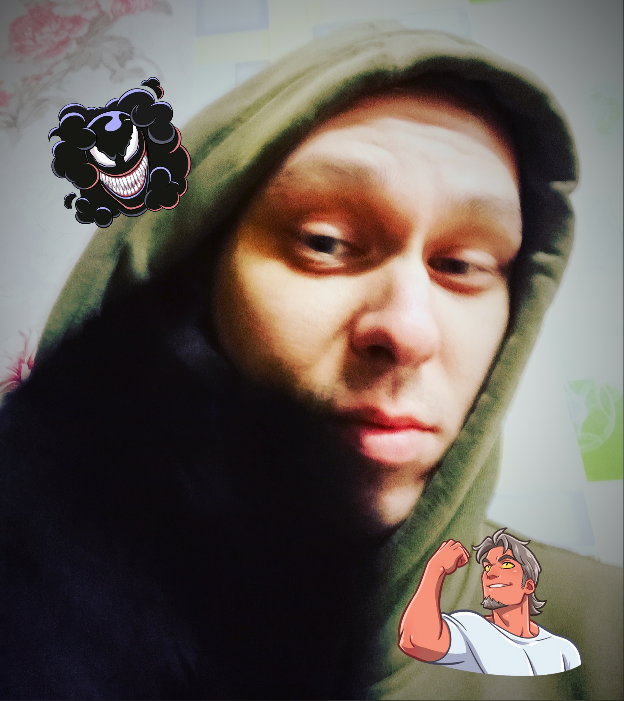

| Внимание! Не пытайтесь перевести текст выше. Всё что там написано - полная бессмыслица. Такая история :) |
|  | Привет Мир!Меня зовут Артём.Мне 31 год.Люблю красиво снятые фильмы, компьютерные и настольные игры, и всё что связано с визуалом |
И это мой первый сайт. Да-да, выглядит ущербно :)
Выглядит не современно, не красиво и всё такое. Но, если что, написан он только на html. Вы можете
подумать "Ну ты хотя б CSS немного накинул бы...". И с одной стороны, я бы с вами согласился, но
я решил первый сайтик сделать прям совсем допотопным. Потому что он первый и он не должен быть
суперкрутым и красивым. Я так хочу! :) Я раньше много чем пробовал заниматься: ютюбом (ссылку
по приколу скину сюда), спортом, музыкой, вобщем много чем. И вот, совсем недавно (точнее давно
уже, года два назад, просто руки дошли только сейчас начать) я понял, что хочу заниматься чем-то
связанным с айти. Много что пробовал: и в геймдев, и в бэкенд, но в итоге понял, что больше всего
меня прёт от визуала. Поэтому решил, что лучшим выбором станет веб-разработка, а в частости фронтенд.
Да-да, я обожаю всё что выглядит красиво и эстетично :) Красивый арт, круто смонтированные видео и
красиво собранные сайты с кучей визуальных эфектов. И этот сайт - моя первая работа после пары дней
изучения этой темы. Пока я начал изучать плотно только html, но уверен, что у меня всё получиться,
потому что, я задолбался работать на бестолковой работе :D
Я хочу созидать! :)
| Итак, если вы не в теме и хотите понять, что ж это за фигня такая html, то ознакомиться можно на Википедии. Так же специально для Вас я на этом сайте оставлю немного дополнительной информации. Ознакомиться с ней можно ниже. |
Почитать про HTML |
Посмотреть про HTML |
| Мои социальные ресурсы |
|
|